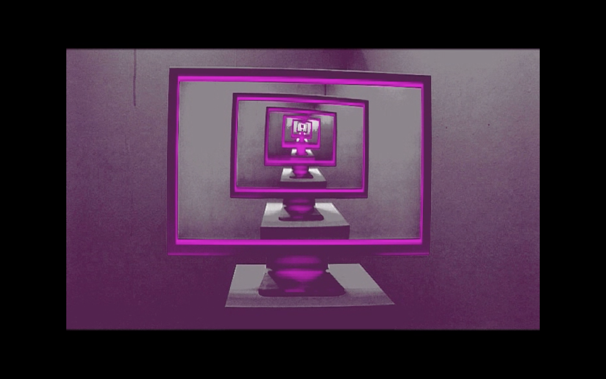

Exhibited At:
- Movement and Computing Conference (MOCO'24) Utrecht, Netherlands. 30 May - 2 June 2024
- Book Launch for Robotic Vision and Virtual Interfacings Science Museum, London. 8 May 2024
- Speculum Artium Festival Trbovlje, Slovenia. 17-19 October 2019
- Event Two Royal College of Art, London. 12-17 July 2019
- Solo Exhibition: Parallax Amar Gallery, London. 16 February - 12 April 2019
- ArtFutura Hackney Picturehouse, London. 27 October 2016
- Inter/Sections Mile End Arts Pavilion, London. 10-16 September 2016
- AVDEPOT #2 New River Studios and ExFed, London. 25 June 2016
- VR:UK Ravensbourne, London. 6-7 February 2016
- Silicon Milkroundabout Truman Brewery, East London, 14 November 2015
- SCANNED_NETWORKED_EMBEDDED Fashion Space Gallery UAL, London. 16 October 2015
- TechtoberFest London Fields Brewery, London. 2 October 2015
- cultureTech Festival Derry, Northern Ireland. 17-19 September 2015
- Interfaces Barbican Centre, London. 21-23 August 2015
- ACM SIGCHI Conference on Human Factors in Computing Systems. Paris, 2013
- Digital Shoreditch Festival. Queen Mary University of London, London. 2012
Residencies
- Gazell.io - Digital Residency at Gazelli Art House, London. May, 2018.
- Fish Island Labs - Residency at The Trampery & The Barbican, London. 2015-2017.
Guest Lectures, Panels and Talks
- Artist Talk and Workshop, SOUND|IMAGE RESEARCH CENTRE at University of Greenwich. 2024
- Invited Talk, Gazell.io Meetup #2 at the Gazelli Art House. 2024
- Guest lecture and Lab, 'Artistic Research and Embodiment in Virtual Reality', at School of Computing and Mathematics, Greenwich University, London, UK. 2022 & 2024
- Invited Talk, 'Potentials of VR in Theatre and Performance', VR Sandpit at Royal Central School of Speech and Drama. 2023
- Invited Talk, BFX Festival at Bournemouth University, Bournemouth, UK. 2022
- Invited Talk, Bodies, Movement and AI in VR Symposium, Department of Computing, Goldsmiths University of London, UK. 2022
- Panel Discussion, Artfutura Festival at Iklectik, London, UK. 2021
- Invited Talk, Dorkbotlondon #95 at Boxing Club, Limehouse Town Hall, London. 2019
- Invited Talk, Art in Flux Events, LIBRARY, London, UK.
- Guest Lecture, Robot Futures: Vision and Touching Robotics Symposium, Science Museum, London, UK.2017
- Panel Discussion, FuturePlay Exchange Conference, Assembly Festival, Edinburgh Fringe, Edinburgh, UK.
Selected Teaching
- Associate Lecturer in Creative Computing, Physical Computing, Experimental and Inclusive HCI & Machine Learning at the Creative Computing Institute, UAL. 2022-2024.
- Lecturer in Interaction Design at the University of Bristol. 2022.
- Assistant Lecturer in Virtual Reality at Goldsmiths University of London. 2021.
Education
- PhD Media and Arts Technology. School of Electronic Engineering & Computer Science, Queen Mary University of London. 2018.
- MA Digital Arts in Performance. Birmingham Institute of Art & Design, Birmingham City University. 2008
- BSc(Hons) Music Technology. Birmingham Conservatoire, Birmingham City University. 2007
Publications
- Plant, N. (2024) Embodiment and the Perception of Nonhuman Sentience in Virtual Reality Interactive Art. In Eldridge, L. and Trivedi, N. (Eds.) Robotic Vision and Virtual Interfacings: Seeing, Sensing, Shaping. Edinburgh University Press. pp. 139–52.
- Plant, N., Hilton, C., Fiebrink, R., Gillies, M., Gonzalez Diaz, C., Gibson, R., Hilton, C., Martelli, M., Perry,P., and Zbyszyński, M. (2021) Interactive Machine Learning for Embodied Interaction Design: A tool and methodology. In Proceedings of the Fifteenth International Conference on Tangible, Embedded, and Embodied Interaction (TEI '21). New York, USA, Article 68, pp.1–5. ACM.
- Hilton, C., Plant, N., Fiebrink, R., Gillies, M., Gonzalez Diaz, C., Gibson, R., Hilton, C., Martelli, M., Perry, P., and Zbyszyński, M. (2021) InteractML: Making machine learning accessible for creative practitioners working with movement interaction in immersive media. In Proceedings of Symposium on Virtual Reality Software and Technology (VRST’21). ACM.
- Plant, N., Hilton, C., Fiebrink, R., Gillies, M., Gonzalez Diaz, C., Gibson, R., Hilton, C., Martelli, M., Perry, P., and Zbyszyński, M. (2020) Programming by Moving: Interactive Machine Learning for Embodied Interaction Design. In NordiCHI international human-computer interaction conference workshop Series.
- Plant, N., Fiebrink, R., Gillies, M., Gonzalez Diaz, C., Gibson, R., Hilton, C., Martelli, M., Perry, P., and Zbyszyński, M. (2020) Movement interaction design for immersive media using interactive machine learning. In Proceedings of the 7th International Conference on Movement and Computing (MOCO '20).
- Plant, N., Fiebrink, R., Gillies, M., Gonzalez Diaz, C., Gibson, R., Hilton, C., Martelli, M., Perry, P., and Zbyszyński, M. (2020) Using Machine Learning to Design Movement Interaction in VR. In Proceedings of EVA London 2020: Electronic Visualisation & the Arts.
- Healey, P. G., Plant, N., Howes, C., and Lavelle, M. (2015) When Words Fail: Collaborative Gestures During Clarification Dialogues. In 2015 AAAI Spring Symposium Series.
- Curzon, P., McOwan, P. W., Plant, N., and Meagher, L. R. (2014) Introducing Teachers to Computational Thinking Using Unplugged Storytelling. In Proceedings of the 9th Workshop in Primary and Secondary Computing Education (pp. 89-92). ACM.
- Plant, N., and Healey, P. G. (2013). Surface Tension. In CHI'13 Extended Abstracts on Human Factors in Computing Systems (pp. 2979-2982). ACM.
- Plant, N., and Healey, P. G. (2012) Empathy and Feedback in Conversations About Felt Experience. In Feedback Behaviors in Dialog.
- Plant, N., and Healey, P. G. (2012) The Use of Gesture to Communicate About Felt Experiences. In Proceedings of SemDial 2012 (SeineDial): The 16th Workshop on the Semantics and Pragmatics of Dialogue (p. 80).